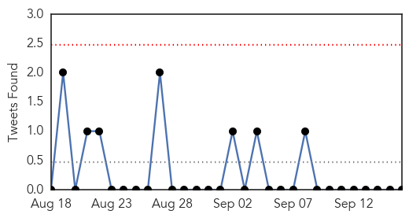
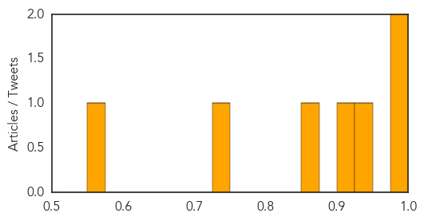
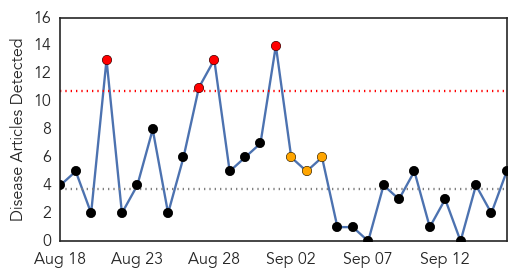
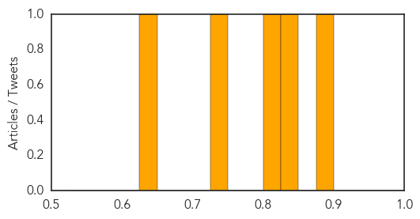

Cholera
30-Day Web Trend
2 alerts, 0 warnings
30-Day Twitter Trend
1 alerts, 0 warnings

Article Locations
Article Confidences
Top Articles:
- 0.985
- 16 die, 172 hospitalized as cholera hits Maiduguri IDPs camp
- 0.984
- 16 die, 172 hospitalized as cholera hits Maiduguri IDPs camp
- 0.946
- Earthquakes Compound Nepal’s Water Worries
- 0.904
- 16 Die, 172 Hospitalized As Cholera Hits Maiduguri Idps Camp
- 0.865
- Cholera Outbreak In Maiduguri IDP Camps Leaves Hundreds Sick, 9 Dead
- 0.749
- Let's Help Prevent Cholera
- 0.572
- IMANI Alert: 2009-12 Budget Analyses Advise A Review Of Healthcare Spending
Top Tweets:
-
No tweets found for Sep 16, 2015
Measles
30-Day Web Trend
4 alerts, 3 warnings

30-Day Twitter Trend
0 alerts, 0 warnings

Article Locations

Article Confidences
Top Articles:
- 0.893
- Health experts warn measles epidemic remains a potent threat
- 0.844
- Measles Outbreak Traced To Fully Vaccinated Patient For First Time
- 0.824
- In Germany, disease prevention for refugees varies from state to state
- 0.728
- Vaccinate Your Children
- 0.626
- More Than 23,000 People Have Been Infected by the Measles in the Democratic Republic of Congo
Top Tweets:
-
No tweets found for Sep 16, 2015